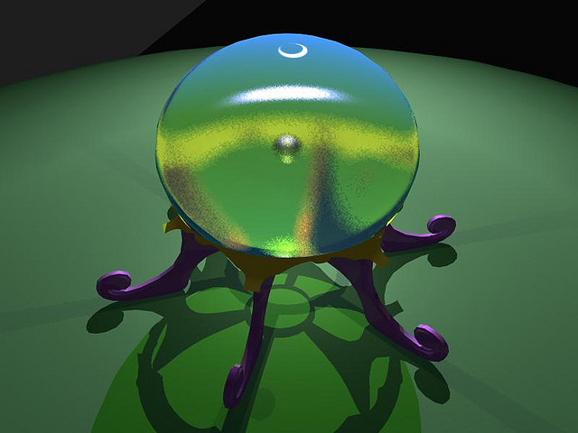
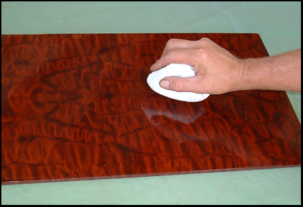
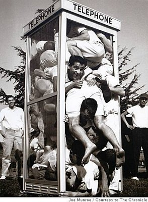
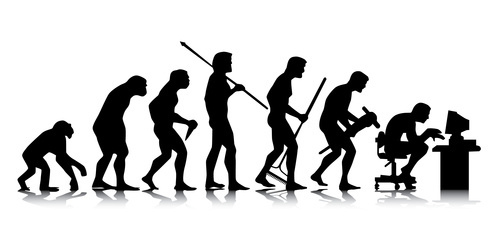

I'm going to be going over a lot of topics in this presentation.
Hi everyone, thanks for coming. This talk is loosely centered on the development of Sequel, hopefully tieing together some not quite related themes. As this is a informal presentation, please feel free to ask questions at any time.
The Development of Sequel
Jeremy Evans
May 2012 at Heroku
We'll start out with the history of Sequel, going into a little more detail than I've done in the past, as I've recently done some additional research in this area.
History
http://www.flickr.com/photos/reavel/
I'll then do something I don't generally do in presentations, and briefly go over my personal background.
Me
After that, I'll jump into the heart of the presentation, discussing how I think about building, documenting, and testing Sequel.
Building
 http://www.flickr.com/photos/alwyn_ladell/
http://www.flickr.com/photos/alwyn_ladell/
I'll then talk about how I handle prioritizing different aspects of Sequel's development.
Prioritization
 http://www.flickr.com/photos/bryankennedy/
http://www.flickr.com/photos/bryankennedy/
After that, I'll discuss how I deal with pull requests that come in on GitHub.
Pull Requests
http://www.flickr.com/photos/sashamd/
I'll then discuss how I approach support to help existing users.
Support
 http://www.flickr.com/photos/mpieracci/
http://www.flickr.com/photos/mpieracci/
Then I'll talk about how I find time to work on Sequel, and how I deal with branches and releases,
Time, Branch, and Release Management
 http://www.flickr.com/photos/see-through-the-eye-of-g/ |
http://www.flickr.com/photos/kampers/ |
http://www.flickr.com/photos/ahhyeah/
http://www.flickr.com/photos/see-through-the-eye-of-g/ |
http://www.flickr.com/photos/kampers/ |
http://www.flickr.com/photos/ahhyeah/
I'll then discuss how I decide which new features to add to Sequel.
New Features

I'll finish up by discussing Sequel's future.
Future
http://www.flickr.com/photos/whosdadog/
So let's jump right into Sequel's history.
History
http://www.flickr.com/photos/reavel/
Most of you probably know that I am not the original author of Sequel. Sharon Rosner was the original author. In August 2006, he started developing a web framework named ServerSide. This web framework started out using ActiveRecord as it's database library. By October, he had apparently become dissatisfied with ActiveRecord and was formulating ideas for a new database DSL.
Pre-conception
http://www.flickr.com/photos/guinavere/
Starting in November 2006 he began to implement some of his ideas that are still present in Sequel today, including a thread-safe connection handler, implicit aliasing and qualification inside symbols, and a method-chaining based query API using Enumerable to return results.
Conception
http://www.flickr.com/photos/preef/
Over the next few months, he added many new features, including connection pooling, schema modification, and a modeling component. He also started adding adapters. Originally, it only supported PostgreSQL, but he later added SQLite support.
Gestation
http://www.flickr.com/photos/locomomo/
In February of 2007, Sharon moved the database code from the ServerSide project into a separate library named Sequel, and on March 5, Sequel 0.0.1 was released.
Birth
 http://www.flickr.com/photos/ohoski/
http://www.flickr.com/photos/ohoski/
Sharon continued to make improvements to Sequel throughout 2007, adding migrations, hooks, and ParseTree-based block handling that works similar to Sequel's current virtual rows.
Early Life
 http://www.flickr.com/photos/fionnaigh/
http://www.flickr.com/photos/fionnaigh/
In January 2008, Sharon split Sequel::Model into a separate gem, got to 100% code coverage, and released Sequel 1.0. Over the next couple months, he fixed numerous bugs and released numerous point versions.

In March of 2008, Sharon decided that he no longer wanted to work on Sequel, so he emailed 4 of the largest contributors to Sequel and asked us to take over maintenance. Of the four, I was the newest contributer, as I had only started using Sequel about a month earlier. Aman Gupta and I stepped up to maintain the library. Originally, Aman was going to maintain core Sequel and I was going to maintain Sequel::Model.
Hand-Off
 http://www.flickr.com/photos/acaben/
http://www.flickr.com/photos/acaben/
My initial involvement with Sequel started when I added an associations implementation, as Sequel didn't currently have one when I started using it. After becoming the maintainer of Sequel::Model, I added support for eagerly loading associations. I also began to get more familiar with core Sequel, and as Aman didn't have enough time, I became the de facto maintainer of that as well, fixing most of the outstanding bugs in the issue tracker.
Enter the Programmer
I released Sequel 2.0 in June of 2008, adding the expression filter support as a replacement for the ParseTree based filters. Over the summer of 2008, I fleshed out Sequel's features, adding support for custom associations, JRuby and Ruby 1.9, sharding, and prepared statements.
In March of 2009, after about a year of maintaining Sequel, I had gathered enough knowledge to decide which features of Sequel were good and which were problematic, and decided that I should deprecate the problematic features and then release Sequel 3.0 which removed those features.

Since Sequel 3.0 was released, there haven't been any major external changes to Sequel, just new features, bug fixes, optimizations, and general polishing. In fact, other than one_to_one associations, which changed in 3.10, most Sequel 3.0 codebases would probably work fine on the current master branch of Sequel.
Polishing

If any of you have seen my past presentations, you know I don't usually talk much about myself. There's two main reasons for that.
Me
The first is that I'm a fairly private person in general.
Private
http://www.flickr.com/photos/encee/
The second is I'm usually trying to cram an hours worth of material into a half hour presentation, and I consider the other material more important.
Cramming

However, I figure this audience may be more interested than most audiences I've given presentations to, and I won't be as pressed for time, so I thought I'd talk just a little about myself.
Interested?
My first experience with programming was in college in 1998 and 1999, where I took a few classes in C++ and Java. I did fairly well, and ended up getting a job in a programming lab, helping other students debug their code.
College: C++ & Java
After graduating from college in 2000, I didn't really do any programming until I started learning PHP in early 2003. After about a year of PHP, I was sick of it, so I started learning Python in early 2004, and used that until I discovered ruby in late 2004.
PHP -> Python -> Ruby
Since I started using ruby in late 2004, it's been my goto language for most of my projects. I still learn other languages, but in general I do that for fun and to learn new concepts, not because I am looking to replace ruby.
 http://www.flickr.com/photos/hisa/
http://www.flickr.com/photos/hisa/
Before I took over maintenance of Sequel, I had never maintained a project with a substantial number of users. On all of my previous projects, I was the sole developer, and none of the projects had more than a handful of users.
New to Project Management
After I took over maintenance of Sequel, I got involved in a couple of other projects. One of those projects is Aqualung, which is an audio player, and the other is OpenBSD, the secure operating system, where I maintain the ruby ecosystem, including ruby 1.8 and 1.9, JRuby, and Rubinius.
Other Projects

My hobbies include playing with my 4 year old son, playing ice hockey, playing video games, and collecting video game music.
Hobbies
 http://www.flickr.com/photos/hb/ |
http://www.flickr.com/photos/cross_stitch_ninja/
http://www.flickr.com/photos/hb/ |
http://www.flickr.com/photos/cross_stitch_ninja/
With the appetizers out of the way, let me get started on the meat of the presentation, which is how Sequel is developed. The first part of this is how I think about building Sequel the library.
Thoughts on Building Sequel
http://www.flickr.com/photos/alexsingh/
How I think about building the library is influenced a lot by what I consider Sequel's design philosophy, which guides the high-level decisions I make in Sequel.
Design Philosophistry :)
One of the guiding points of the philosophy is that the database is the master, not Sequel. Sequel is just a way of accessing the database.
Database is Master
From this guiding point, it naturally follows that Sequel parses the schema from the database instead of having to specify the schema manually in the application.
Schema Belongs in the Database
Having to specify the schema manually in the application is redundant, since it must be specified in the database anyway.
Duplication
If you specify it in both places, then you must decide how to handle conflicts.
Conflicts?
If you treat the application's schema as superior to the database's, then you must somehow modify the database's schema to match the application's schema.
Application Superior
That is impossible to do properly automatically, for the simple reason that it is not possible to tell what changes were made. If there is one unexpected column and one missing column in the database, did the missing column get renamed to the unexpected column name, or was the missing column dropped and the unexpected one added?
Impossible?
Let's say instead that you treat the database's schema as superior in case of a conflict.
Database Superior
Then specifying it in the application is pointless, since it would be the same as just parsing it from the database everytime.
Pointless?
Another of the guiding points is not treating the database as a dumb store, as many other ruby database libraries do.
Dumb Store? NO!
The main reason to not treat the database as a dumb store is that it ignores one of the primary advantages of using a relational database in the first place, which is that it has ACID properties.
ACID
The main ACID property that goes away when you treat the database as a dumb store is consistency.
Consistency
For example, some other database libraries don't encourage using real foreign keys. Without real foreign keys, it is difficult to ensure referential integrity, and usually results in foreign keys that don't point to valid rows.
Foreign Keys
Some other database libraries try to enforce consistency with hooks and validations.
Hooks and Validations
While Sequel offers both hooks and validations, it does not encourage their use to ensure consistency.
Bad for Consistency
For one, neither hooks nor validations are always called. Any time you do any bulk updating of the database, or access the database at all from outside the model, you skip hooks and validations.
Easily Skipped
Now, let's say you write perfect code, and never do any bulk updating on any class, or access the database from outside the model.
Perfection?
Then why are you using a relational database at all? The main advantage of a relational database is that you can operate on sets of data at the same time. If you want to make a change to a million rows, do you really want read them in and write them out one at a time?
Why?
Thankfully, databases solved most of these problems years ago.
Solved Problems
Databases have a built-in hook mechanism, called triggers, which can reliably enforce consistency. If you have a single query that updates a million rows, you can be sure that the trigger will enforce the consistency for all of the rows modified.
Triggers
Databases also have a built-in validation mechanism, called constraints. Just like triggers, the database enforces these for every row, no matter how it is accessed.
Constraints
Sequel encourages the use of both constraints and triggers. In addition to the documentation encouraging their use, Sequel also offers APIs for them.
Use in Sequel
You can add both named and unnamed constraints when creating tables using constraint and check, and add and drop named constraints when altering tables using add_constraint and drop_constraint.
- constraint
- check
- add_constraint
- drop_constraint
Sequel's shared postgres adapter offers the ability to create and drop both triggers and functions that return trigger.
- create_trigger
- create_function
- drop_trigger
- drop_function
I have also written a Sequel extension called sequel_postgresql_triggers, which makes it easy to write triggers that enforce create and update timestamps, accurate counter and sum caches, and column immutability.
sequel_postgresql_triggers
I haven't yet written a similar extension for constraints, but it is on my todo list.
sequel_postgresql_constraints?
Note that I think both hooks and validations are useful for some purposes.
Still Useful
I think validations should be used solely to provide nice error messages to the user. In many cases, these may duplicate constraints that you are enforcing in the database.
UI
Hooks have a wide array of uses, and I think most of them are valid. I just don't think they should be used to attempt to enforce data consistency.
Hooks
In addition to foreign keys, triggers, and constraints, I also try to support other advanced database features in Sequel where I can do so, such as custom prepared statements, two phase commit, transaction isolation levels, common table expressions, and window functions.
Other Advanced Features
Basically, Sequel's design philosophy is that advanced database features exist for good reasons, and that in most cases it's better to use those features than attempt to recreate the wheel poorly in your application code.
Design Philosophy
Underneath the design philosophy is what I refer to as the implementation philosophy, which is how to implement particular features.
Implementation Philosophistry :)
When I design APIs for Sequel, I'm rarely thinking about my own use case. In general, I try to think about different ways such an API could be used, and the issues in each type of use. I find that considering different use cases up front, before designing the API, is helpful, as it's often much more difficult to retrofit different use cases into an existing API.
Flexible
http://www.flickr.com/photos/21561428@N03/
One of the best ways to write flexible software is to write generic software. Instead of designing a single API that completely handles a specific case, you write multiple APIs that handle smaller, more generic parts of that use case, and then handling the entire case is just gluing those parts together.
Generic
When you approach code like that, designing APIs that solve generic problems, you can more easily reuse those APIs later, to solve other problems.
Reuse
 http://www.flickr.com/photos/stevensnodgrass/
http://www.flickr.com/photos/stevensnodgrass/
I think much of Sequel's flexibility comes from its use of datasets. Because almost all queries in Sequel are represented by datasets, and most dataset methods return modified copies of themselves, Sequel is flexible enough to handle virtually any database query just by using a simple method chain.
Datasets
Finally, Sequel makes it easy to operate directly on the underlying connection object for the cases where you need the maximum possible performance or where you want to use unique features in the underlying driver that Sequel doesn't expose an API for.
Direct Access
Part of the Sequel's flexibility comes from its functional style of operating. When possible, Sequel tries to give the user the ability to specify custom functions for behavior.
Functional Style
The best example of this is in Sequel's custom associations support. Sequel has the most powerful associations of any ruby database library because the user has the ability to completely specify the association's dataset and how the association is eager loaded. It even allows customization on a per call basis.
Custom Associations
The downside of custom associations is that, especially for eager loading, writing custom functions that do what you want can be difficult. To make this simpler on most users, Sequel offers a wide variety of options so that very few people actually need to write fully custom associations.
More Options
Another functional style that Sequel uses is that it does eager copying, to limit the sharing of mutable data.
Eager Copying
For example, Sequel models generally copy data when subclassing, for any data that is possibly mutable. This makes it easier to reason about, since you don't have to worry about superclass changes after subclassing.
Model Subclassing
However, it makes order more important in some cases. For example, if you want a plugin to affect all model classes, you should load it into Sequel::Model class before creating subclasses, as doing so afterward may not work correctly.
Order Important
Another implementation consideration that I keep in mind while developing Sequel is that I want Sequel to remain small. Sequel is currently the smallest of the mainstream ruby database libraries in terms of code size, and it is also the fastest to load, and I don't want to change that.
Small Core
I try to keep the core of Sequel and the base of the model class to a small footprint, and add features that are not needed by a lot of people as extensions and plugins.
Extensions & Plugins
More than anything else, I want Sequel to remain simple. I believe complexity is the main source of bugs in code, and try hard to avoid complex approaches. In general, I'm probably less successful here than I am in the other goals, but I believe this is the hardest goal to achieve.
Simple
http://www.flickr.com/photos/daniele_sartori/
I think the reason it is the hardest goal is that as programmers, we are used to communicating with a machine. As long as we communicate correctly with a machine, the machine does what we want, modulo compiler or hardware bugs. Trying to keep code simple is not about communicating with a machine, it's about communicating with other programmers. In this case, it's not about whether the code is correct, but how easy it is to use for other programmers.
Simple is Hard
I think there are two kinds of simplicity. First, is internal simplicity, which is how simple are the internals of the library. This is important, because if a library is very complex internally, it is hard to understand, the barrier to entry is high, and you decrease your potential pool of contributors. In some cases, internal complexity is unavoidable, but I don't believe a database abstraction library is one of those cases.
Internal Simplicity
There is also external simplicity, which is how simple it is for a user to use your library. This is the more important of the two simplicities, at least as long as your pool of users is larger than your pool of contributors.
External Simplicity
In general, these goals are interconnected. If you refuse to allow complexity into you library internals, it's likely that complexity is pushed to the users of the library. The more flexible and powerful you make the library, in general the more complex the internals become. It really is a balancing act.
Balancing
http://www.flickr.com/photos/orangebrompton/
One way Sequel tries to keep both the internals and externals simple, is by using simple ruby data structures for many things. Where other database libraries use custom objects for data types, Sequel generally will return something that just uses plain ruby hashes and arrays.
Data Structures
I think this is easier to understand. When a rubyist sees a hash or an array, they know immediately what they are dealing with and how to operate on it. When you return a custom data type, then the user generally needs to read the documentation about that type to find out how to use it.
Easy to Understand
The downside in this case is that it potentially limits future flexibility. If you are returning custom objects, you can easily add new behavior to them later, whereas if you are returning an array or hash, you generally can't do that.
Limits Future Flexibility?
In practice, it turns out that isn't really an issue. In most cases, the data format does not change, and on the rare occasions when it does, you can just subclass from array or hash and add your own behavior. Sequel took this approach with its association reflection objects, which started out as plain hashes, and as they got more complex, started subclassing Hash to provide custom behavior.
Not Really
Another example of Sequel's simple approach is that it doesn't use proxies for associations. to_one associations either return the associated object or nil, and to_many associations always return a plain array of associated objects.
Proxy-less Associations
This is not an accident, it was a delibrate decision on my part. After multiple years of using ActiveRecord and seeing the complexity and issues in the proxy approach that it used for associations, I chose a more direct and simple approach.
By Design
Internally, it is obviously much more simple, since you don't have to deal with a proxy object at all.
Internal Simplicity
Externally, it's more of a wash. The proxy approach has a set of advantages and disadvantages. Proxies by their nature involve additional magic behind the scenes, and I think they are more difficult to reason about. In my own code, I've found Sequel's approach of using separate add and remove methods meets my needs in an easy to understand way.
External Simplicity
One of my final goals when designing an API is to make it so a user can use the API to write fairly concise code that is still easy to understand.
Concise But Not Terse
Most of Sequel does a pretty good job with this. When I look at most Sequel code, I can easily tell what the code is trying to do.
Most of Sequel: Yes
Unfortunately, not all Sequel code is easy to understand. In particular, complex virtual row code is known for being hard to read. However, virtual rows are very concise, and are really their own DSL.
Complex Virtual Rows: No
I tend to think of virtual rows as similar to regular expressions. When you choose to use them, you are making a choice to keep code concise at the potential expense of readability.
Regular Expressions
To sum up, Sequel's implementation philosophy aims to create flexible, simple, and concise code.
Implementation Philosophy
Even if your code is simple, flexible, and concise, it probably won't help many people unless it is documented to the point that most users will be able to use it without reading the source code.
Documentation
http://www.flickr.com/photos/acaben/
I've tried hard to make sure that almost all methods and classes in Sequel are documented. There are some adapters that aren't fully documented, but pretty much everything else has at least some basic RDoc.
RDoc
One thing I do with Sequel that I don't see a lot of other projects do is that in Sequel, even the private methods get documented. Now, as the user generally does not see the private method documentation, this documentation is designed to help contributors to Sequel.
Private Methods
RDoc is a useful tool, but in general is often too specific. If you don't know which method you are looking for, it's hard to know where to begin. In Sequel's case, I've written many documents that are stored in Sequel's doc directory that provide overviews of different areas of Sequel, which should be more accessible than the RDoc itself.
Explanatory Documents
Unlike some other projects, these documents are kept as part of the Sequel repository, so it is easier to keep them up to date when Sequel changes. Additionally, it is easier to track issues in the documents, since users can submit pull requests to change them.
Part of Repository
Unfortunately, while Sequel's documentation is in general good, there is little in the way of beginner documentation. Someone attempting to learn Sequel without prior exposure to other ruby database libraries is in for an uphill climb.
Little Beginner Documentation
While documentation is important, it isn't as important is having automated tests for the code.
Testing
 http://www.flickr.com/photos/unavoidablegrain/
http://www.flickr.com/photos/unavoidablegrain/
While many people seem not to agree with this approach, I aim for 100% line coverage in Sequel.
Goal
 http://www.flickr.com/photos/anvica/
http://www.flickr.com/photos/anvica/
I have a saying: "100% coverage means nothing,
100% coverage means nothing
but less than 100% coverage means something". At least, it means there is code that isn't being automatically tested.
<100% coverage means something
For an app, maybe there are sections where you don't need 100% automated test coverage. Maybe some parts change infrequently, can be tested easily manually, and are difficult or time consuming to test automatically.
Less Important for Apps
Maybe 100% coverage isn't the best use of your time, in terms of cost benefit analysis.
Best Use of Time?
But if you can afford to spend the time, I think it is worth it. Because of Sequel's rigorous automated testing, there have been very few uncaught regressions. I think I've done about 50 feature releases of Sequel, and only 6 regression releases.
Worthwhile
I know that test driven development is very big in the ruby community.
TDD?
In some cases, I use test drive development. In other cases, I write the code first and the tests last.
Sometimes
For obvious bugs and simple features, where I know the API and behavior I want in advance, I generally use test driven development.
When API Known in Advance
However, in many cases, I don't know what API and/or behavior I want in advance. Much of the programming I've done in Sequel has been exploratory in nature. When I was going to implement sharding and prepared statements, I really had no idea how they could be implemented in Sequel. In those cases, you can't really write the tests first.
Test Last Otherwise
Even when I use test driven development, I usually end up writing numerous additional tests afterward. Test driven development is good in that it focuses you on writing code that solves the problem. However, it's generally hard to think of corner cases for nonexistent code. After you write the code, it's often easier to see where the corner cases will be. Once you see them, it's fairly simple to write tests that check for correctness in the corner cases.
Additional Tests After
Good tests are absolutely crucial when undergoing developer transitions. When I took over development of Sequel, the design was pretty good. However, the implementation was a mess, and the documentation was slim. However, the test suite was in great shape, and it helped me understand how Sequel was supposed to work. Crucially, it allowed me to refactor the implementation with confidence that I wasn't breaking things.
Testing Crucial for Transitions
- Design = Good
- Implementation = Mess
- Documentation = Slim
- Tests = Great
I believe that if the Sequel test suite was not in such a good position when I took over maintenance, I probably would not have been able to maintain the library well, and Sequel development may have stopped.
Without Good Tests,
http://www.flickr.com/photos/fireflythegreat/
Writing good tests is very important, but it's also important that you run those tests on a regular basis to make sure that bugs aren't being introduced.
Running Tests
Unlike many similar projects, Sequel does not use a continuous integration system.
No Continuous Integration
Instead, I generally run the full test suite before all pushes to Github.
Test Before Push
There are small exceptions for documentation patches and adapter-specific patches, but that's pretty much it.
Small Exceptions
So what is the "full test suite" that I mentioned? Well, it runs the main specs and plugin specs on about 8 separate ruby interpreters, and the integration and adapter specs on about 60 separate combinations of ruby interpreters, adapters, and subadapters.
"Full Test Suite"?
This test suite tests all of the common adapters, and many of the uncommon ones.
Tests Most Adapters
The oracle and db2 support is tested separately since they are both installed in their own virtual machines. These aren't tested before every push, but they are tested on a regular basis whenever new database features are added or database behavior changes are made.
Oracle and DB2 Tested Separately
The only adapters that are not tested at all are informix, openbase, and dbi.
Informix, Openbase, and DBI Not Tested
One of the benefits to this scheme is that problems are almost always found before pushing to GitHub, and then the commits are amended with the fixes. This keeps the history cleaner.
Fix Problems Before Push
However, the main benefit is that the GitHub master branch is always safe to pull from. This is important so that users can rely on it not being broken, and it also affects release management, which I'll talk about later.
Master Always Safe
I'm now going to talk about how I prioritize things when developing Sequel.
Prioritization
http://www.flickr.com/photos/bryankennedy/
In general, I give top priority to fixing real bugs in Sequel, then I try to fix other issues in Sequel that may be problematic, but aren't really bugs. In last place is adding new features or optimizing existing Sequel code.
General Priority
- Real Bugs
- Other Issues
- Features/Optimizations
The most important thing here is that real bugs have the top priority. If you encounter behavior in Sequel that is just plain wrong, where Sequel is obviously not operating correctly, then I pretty much drop what I'm doing and fix it. In general, real bugs are not that frequent in Sequel.
Bugs
http://www.flickr.com/photos/jezpage/
Most of the time, if you look at Sequel's issue tracker on GitHub, you'll see 0 outstanding issues. That's what I aim for.
0 Outstanding
In general, most issues filed on Sequel's bug tracker are not real bugs. However, most of them do indicate some other problem in Sequel.
Few Code Bugs
http://www.flickr.com/photos/holeymoon/
Many of the issues filed on Sequel's bug tracker are documentation issues. Often, the person is expecting an API to work one way, when it really works another way, and better documentation would fix the problem. Sometimes, there are actually bugs in the documentation, where they say things that are no longer accurate.
Documentation Issues
I generally treat such documentation bugs like code bugs, giving them the highest priority. In general, these bugs are easy to fix, since you just have to correct the documentation, so giving them priority doesn't take up a substantial amount of time.
Documentation Bugs
One of the things I've noticed in my development of Sequel is that most issues appear to affect a small number of users. Consequently, it's easy to have the mindset that it's OK something is broken for a while, since few people will be affected.
Affected Users
However, I think that most developers generally tend to underestimate the number of affected users. I try to work under the assumption that if one user has taken the time to submit an issue, there are probably more that had the same issue, and are either unaware of the issue, tried to work around the issue, or just gave up and used another library.
Usually Underestimated
Even if I know that a bug is only affecting a single user, I give that bug priority. For one thing, most real bugs tend to be easily solved code issues, so they don't take much time to fix. Also, I try to put myself in the user's shoes. If I found an obvious bug in another library, I'd want them to fix it soon.
Priority to All Bugs
After fixing any real bugs, I generally work next on issues and limitations that aren't really bugs, but cause undesireable behavior.
Issues & Limitations
An example of this is when I made the change to allow prepared statements to also log their SQL. The issue here is that previously, the prepared statement plugins only showed the SQL when logging the preparation of the statement, not the execution. Consequently, it was difficult to see from looking at a subsection of the logfile, what SQL was actually causing an error.
Prepared Statement SQL
This definitely wasn't a bug, but it combined two features, logging and automatic statement preparation, in an undesireable way. Many of the issues posted on the bug tracker fit in this category, where they aren't real bugs, but still are issues that should be fixed.
Not a Bug
These issues are usually more difficult and time consuming to fix, as they often require refactoring existing code. But they are still important to make to ensure that different parts of the library work well together.
More Difficult
Last on the priority list are adding new features or optimizing existing features. While these are last on my priority list, they actually take up the most Sequel development time, simply because real bugs and other issues don't come up all that frequently and are dealt with fairly quickly.
New Features & Optimizations
I keep an internal todo list of new features I want to implement or optimizations I want to try. This is one of the only things in Sequel development that is not public.
Todo List
I keep the list in a short text file, usually fewer than 10 features.
http://www.flickr.com/photos/bryankennedy/
I often move lines around in the list as I decide I want to implement one of the later lines sooner or decide I don't want to implement the top most line until later.
Move Lines
The main reason this list isn't public is that I usually add to it on a whim, and later, after I give it some more thought, I decide to delete lines from the file because I've determined they either aren't possible to implement well or will cause other problems.
Remove Lines
If the list were public, people would look to it as the Sequel Roadmap, and I really don't treat it like that. It's just a list of possible ideas, some of which may be crazy. I don't want people seeing something on the list and asking me when it will be implemented, or seeing me remove something from the list and asking why I removed it.
Not a Roadmap
I'm now going to talk a little about how I handle pull requests for Sequel.
Pull Requests
http://www.flickr.com/photos/sashamd/
When a pull request comes in, I read through the description in the pull request first, to get an idea of what issue the person is attempting to solve. For this reason, it's a little irksome when people don't write decent descriptions.
Read Description
 http://www.flickr.com/photos/gaelmartin/
http://www.flickr.com/photos/gaelmartin/
After that, I'll review each of the related commits in the pull request to try to gauge the effect of the change and get a feeling as to whether it should be merged.
Review Commits
Most pull requests are fairly straightforward, and appear to be easy to merge without causing issues.
Most are Simple
Regardless of whether I plan to merge the pull request, I respond on the pull request to give my thoughts, even if it's just that the pull request looks good and I'll try merge it soon. Often I'm giving this feedback to the user within minutes of them submitting the pull request, which keeps the submitter engaged and lets them know right away that I am considering the pull request.
Respond First
Most of the pull requests I merge require cleanup. Usually I'll just merge them and add a new commit that cleans them up to conform with Sequel's code style, fix corner cases, and update the CHANGELOG.
Cleanup
 http://www.flickr.com/photos/61315070@N05/
http://www.flickr.com/photos/61315070@N05/
It's fairly rare that I'll hard reject a pull request, saying that I don't plan to add the feature to Sequel. I do do so on occasion, but only if I think that the patch would cause more issues than it would solve.
Hard Reject
More often, If I'm on the fence or even just leaning against accepting a patch, I'll state my reasons for not accepting to the submitter, and ask the submitter to bring up the patch on sequel-talk and try to get community behind the proposal if they still want it merged. If the community is strongly in favor, I'll merge it.
Soft Reject
In most cases, if I soft reject a pull request in such a manner, it doesn't end up getting merged even if the person posts on sequel-talk. The usual case is that nobody will respond, but when someone does respond, usually they bring up similar issues that I've already mentioned when responding to the pull request.
Usually Not Merged
When I reject a pull request, I always try to provide reasons why I think the pull request is not a good idea. I try hard to avoid the appearence of arbitrariness, since that drives potential contributors away. Even if I didn't accept their current pull request, I still want them to want to contribute to Sequel in the future.
Provide Reasons
A significant portion of the time I spend on Sequel is doing support.
Support
http://www.flickr.com/photos/mpieracci/
I prefer that support requests come in one of two ways. The first way is via the sequel-talk Google Group. The best thing about this method is that when I respond, all Sequel users can see the answer, and the archive is easily searchable, so people looking to ask a question can search first to see if it has already been asked. This is also good in that other people actively monitor this list, so they may be able to answer the question before I have time to.
sequel-talk
The second preferred way to submit a support request is to ask on the #sequel channel on the freenode IRC network. The advantage of IRC over the Google Group is reduced latency, assuming I have time to talk. So it's much easier to discuss something on IRC. However, for complex topics requiring a lot of research, the Google Group is better.
#sequel
I do respond to support requests on GitHub Issues, but I don't like using it. I prefer to treat GitHub as a bug tracker. Questions about how to use Sequel are better asked on one of the two preferred ways. Usually I attempt to answer the question, and ask the user to use the Google Group for similar questions in the future.
GitHub
I search Twitter and Stack Overflow daily for possible Sequel issues, and try to respond directly to the person. This isn't a perferred method, but it still has the benefit of being searchable and having answers go out to a wide audience.
Twitter & StackOverflow
Finally, I do occassionally get support requests via my personal email account. This is probably my least preferred method, as the only person that can benefit from the answer is the person who sent the email. Still, I generally attempt to answer the question, and also add that they should ask on the Google Group in the future.
Personal Email
I lurk in the IRC channel for most of the time I'm using a computer, so questions asked on IRC are often answered within minutes or even seconds. GitHub Issues also get posted to the IRC channel via a hook, so I usually respond to those right away as well. The Google Group I check a few times a day, so questions there tend to wait longer before being answered.
Monitoring Frequency
Occasionally, the person asking for support is doing so in an impolite manner. That's understandable, as they may be frustrated by what they think is a problem with Sequel.
Impolite Requests
I do try to be polite when I respond even when the requester isn't as polite.
Polite Response
However, often my sarcastic nature gets the better of me and I'm unable to contain myself.
http://www.flickr.com/photos/chrisgriffith/
I do occassionally get asked how I have so much time to spend on Sequel development. I've even been accused of being the front for a team of secret developers, though I assume that accusation was in jest.
Time Management
http://www.flickr.com/photos/see-through-the-eye-of-g/
If any of you have looked at the punchard graph on GitHub, it should be fairly obvious that most commits are done during business hours. I do commit occasionally at night or on the weekend, but most actual coding happens during business hours.
M-F 8-5
Outside of business hours, my time spent on Sequel is usually on support. For example, I'm often helping people on IRC at night using a secondary monitor while my son sits on my lap and plays games on my main monitor.
Evenings and Weekends
I spend a lot of time outside business hours thinking about Sequel, and how to implement possible new features and optimizations.
Thinking
Sequel is heavily used at my day job, as our internal and external websites, and many internal programs use it.
Day Job
I work for a small goverment department, where I'm pretty much the sole programmer. Additionally, I'm also the network administrator and the backup for the help desk.
- Sole Programmer
- Network Admin
- Help Desk Backup
I've been working in the same department for 11 years. When I started out, I was pretty much constantly fighting fires and doing repetitive tasks. However, in the first few years I fixed most of the chronic problems and automated most of the repetitive tasks. So when I'm not developing new projects or new features for existing projects, I usually have spare time to work on open source code.
11 years
Sequel is the most important open-source project I work on, so it generally gets priority over my other open-source projects.
#1 Project
I'm now going to talk about branch management. Sequel has a fairly simple approach to branch management.
Branch Management
http://www.flickr.com/photos/kampers/
Unlike most other ruby database libraries, Sequel only has a single public branch, the master branch. I generally develop directly against the master branch.
master
I only create a private branch when I am working on a complex feature that I think will take more than a day to implement. As soon as it is stable and regression free, I merge the private branch into master and delete it.
Private Branches
I think that having long lived feature branches can cause development problems. The longer lived they are, the more merge conflicts that are likely to occur. Also, there is a tendency to fragment development, with different contributors basing patches on different branches. Having a single public branch reduces the potential for problems.
Feature Branches
I'm not against all branches, though. I think having a stable branch where bug fixes are backported from master is a good development strategy. The reason Sequel doesn't do that is that other than regressions or very serious issues, I don't backport bug fixes. Most of the regression-fixing releases have been done from master, though for the most recent one I did use an anonymous branch.
Stable Branches
Explaining why bug fixes are not backported leads me to discuss Sequel's strategy for release management.
Release Management
http://www.flickr.com/photos/ahhyeah/
Sequel uses a time-based release strategy, not a feature based release strategy. While this is rare for ruby projects, it's not uncommon for mature software projects that are still actively developed. For example, the Linux kernel, OpenBSD and Ubuntu operating systems, and PostgreSQL database all use time-based releases.
Time-Based
http://www.flickr.com/photos/see-through-the-eye-of-g/ | http://www.flickr.com/photos/ahhyeah/
Sequel is a bit different than those projects, in that it is released every month, and has been since August 2008. The one exception is that there was no release in February 2010, since there weren't enough changes to warrant one. The main reason that I don't backport most bug fixes in Sequel is that it's on average only going to be about two weeks until a new version is released containing the fix.
Every Month
 http://www.flickr.com/photos/knterox/
http://www.flickr.com/photos/knterox/
I could certainly release Sequel twice a month, or even every week, to get the fixes and features out sooner, but I think releasing that often would fatigue Sequel users. As it is I think the monthly releases are more often than some users would like. However, I don't want to wait too long between releases, so I think once a month is a good medium.
Happy Medium?
One of the benefits of time based releases is that they encourage evolutionary change, instead of revolutionary change. Instead of radical breaks every year or two years, smaller changes are made every month. I think this is easier on users. For users who prefer to upgrade less often, it's fairly easy to just skip some releases, so if a user wants to upgrade every 3 months or just once a year, they can easily do that.
Evolutionary Change
http://www.flickr.com/photos/55524309@N05/
Preparing a release is often difficult for many projects, but for Sequel it is fairly easy. Because the GitHub public master branch is always in a releasable state, releases can basically be done as often as desired.
Releases Easy
The most time consuming part of the release process is writing the release notes. This entails me looking at the output of git log since the last release, and making sure all user visible changes are mentioned somewhere in the release notes. Usually this takes between 1 and 4 hours per release.
Release Notes
Even though it's fairly time consuming, I think it is worth it. Most users are not going to read the commit messages, and the CHANGELOG doesn't have enough detail, but most users will read the release notes.
Important
I occassionally get asked how I choose which new features to add to Sequel. Unfortunately, it's not as simple as this picture would indicate.
New Features
In general, most new features added come directly or indirectly from user requests.
User Requests
An example of a direct request is when Harold over here at Heroku asked for support for TRUNCATE CASCADE on PostgreSQL. This was fairly easy to implement just by having the Dataset truncate method in the PostgreSQL adapter accept a :cascade option.
TRUNCATE CASCADE
More often than direct requests are indirect requests for features, which are features that are thought of by me, but only because of input from an existing user.
Indirect Requests
For example, when Harold asked for TRUNCATE CASCADE support, I looked up what other TRUNCATE options were offered by PostgreSQL. I added the other options PostgreSQL supported, and in addition modified the code so you could truncate multiple tables at the same time.
TRUNCATE ONLY RESTART IDENTITY
Now, that particular feature addition might go against the "you ain't gonna need it" principal. However, it's a small feature that was easy to add at the same time, and I think it could be useful to some users.
YAGNI?
Some new Sequel features I think up on my own.
My Ideas
For example, Sequel's custom association support was my own idea, it wasn't requested by anyone.
Custom Associations
Also, many of the new features in PostgreSQL 9.1, such as writable common table expressions, I added support for before getting any requests in.
PostgreSQL 9.1
I've never been one to shy away of borrowing ideas from other projects.
Borrowing
http://www.flickr.com/photos/a_funk/
For example, I added separate plugins to handle 3 of the features that were unique to DataMapper: strategic eager loading, identity map, and lazy attributes. I don't think any of these features is a worthwhile default, but there are many cases where one of the plugins is beneficial. With Sequel's plugin support, you can pick and choose which features you want to enable.
DataMapper
When I borrow from another project, I only borrow the idea. Generally I look at the feature's documentation in the other project, and then craft my own implementation that does something similar. I often look for ways to improve the feature.
Improve!
For example, Sequel's tactical eager loading plugin handles multiple levels of automated eager loading, whereas DataMapper's implementation only handles a single level.
Strategic Eager Loading
Sequel has borrowed a lot from ActiveRecord. Even before I took over, Sequel::Model operated quite similarly to ActiveRecord in basic use. Some ActiveRecord features I've borrowed since taking over are reversible migrations, the prepared statement plugins, to_dot extension for visualizing datasets, and the create_join_table method.
ActiveRecord
In most cases, because ActiveRecord's release cycle is much longer than Sequel's, I usually end up shipping new ActiveRecord features before ActiveRecord ships with those features.
Ship First
In closing, I'd like to briefly talk about the future of Sequel.
Future
http://www.flickr.com/photos/whosdadog/
In general, I think Sequel development has been going well, and don't plan to make significant changes in the near future. I'll continue making Sequel 3.x releases on a monthly basis, as bugs get fixed and new features get added.
Sequel 3.x
If you've been following the release notes, you've probably noticed that I've mentioned Sequel 4 a couple of times. While there are currently no plans to release Sequel 4, if and when the release does happen, it will include no longer enabling the core extensions by default and will integrate the query_literals extension into the core library.
Sequel 4?
That's about it in terms of future plans. I mentioned earlier about my private todo list, but there aren't any major things on it, just some minor features and cleaning up some existing code.
That's It
That wraps up my talk for today. If you have any additional questions, I'll be happy to answer them now.
 http://www.flickr.com/photos/valeriebb/
http://www.flickr.com/photos/valeriebb/
Well, there is just one more thing I'd like to talk about before I conclude today's presentation.
One More Thing
I'm sure you guys over here at Heroku deal with large datasets on a regular basis. Let's say you want to iterate over the rows in a large dataset in ruby, what's the biggest problem?
Large Datasets
Well, with the naive approach of just using the Dataset each method, you generally run into memory issues, since even though Sequel will only instantiate one ruby hash at a time, libpq will load the entire result set in memory. There are various workarounds for this.
Memory
You could use separate queries using limit and offset, to only load so many rows in memory at once. However, to be safe, you had to do so in a transaction so your view was consistent, and you had to manage the separate queries manually, so it wasn't a drop in replacement.
Separate Queries
Back in 2009, I added support for the Dataset use_cursor method to the postgres adapter. This used a cursor behind the scenes, yielding records one at a time, so it was a drop in replacement. However, it still loaded a set of records in batches, and required separate server round trips for each cursor fetch, which may be an issue for high-latency connections.
use_cursor
As most of you are probably aware, PostgreSQL 9.2 beta 1 was released last week. It has a bunch of awesome new features that I plan on supporting in later versions of Sequel. One of those features is mentioned near the end of the release notes, where it says "Add a row processor API to libpq for better handling of large result sets".
PostgreSQL 9.2
This API is called PQsetRowProcessor, and it allows you to install a custom C function that gets called for every row that gets loaded over the socket. Using this API allows you to process rows one at a time, with no additional CPU or memory overhead or server round trips. I have added support for this feature when using Sequel.
PQsetRowProcessor
This feature is not implemented in Sequel itself, it is shipped as part of sequel_pg. For those of you who don't know about sequel_pg, it's an optional optimization library that you can install that makes Sequel's postgres adapter faster when used with the pg library.
sequel_pg
You just require sequel_pg/streaming in your app, and extend the Database with a module, and then you can use the Dataset stream method to have the dataset use the new row processing API.
sequel_pg/streaming
Additionally, you can extend the Database's datasets with a separate module called AllQueries, which uses the new row processing API by default for all fetches. This passes the Sequel test suite, so it should be safe.
AllQueries
Unfortunately, this feature does have its issues. The first you aren't going to care about as users, but you can't use the standard libpq API when using PQsetRowProcessor, which complicates the internals of the library.
Cavaets
The second could cause problems, in that it makes PostgreSQL similar to other database adapters in that you can no longer nest calls to Dataset#each. This has always been frowned upon in Sequel, since it isn't portable across databases, but it does work on PostgreSQL. Unfortunately, the way streaming is implemented, if you nest calls on PostgreSQL, instead of getting a regular DatabaseError, you'll probably get a SystemStackError.
No Nesting
One good thing about this feature is that it is implemented on the client side, so it doesn't depend on upgrading your database server, only your client. So you can stream results from an older server version of PostgreSQL. I've successfully used the 9.2 beta client to stream records from a 9.0 server, and I assume it works on older versions as well.
Client-based
I'd like to give you a brief demo of this feature now.
Demo
If this new streaming API sounds like something you would be interested in, please try it out and let me know how well it works for you. The code will be pushed to GitHub shortly. Any questions about this new streaming feature?
http://www.flickr.com/photos/valeriebb/
That concludes my presentation. Thank you very much for inviting me to Heroku to present about the development of Sequel.
 http://www.flickr.com/photos/theredproject/
http://www.flickr.com/photos/theredproject/
twitter: @jeremyevans0
github: jeremyevans
code@jeremyevans.net